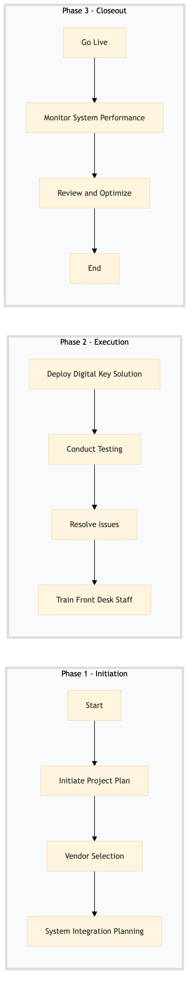

| Role | Steps |
|---|---|
| IT Director | 1.1 1.3 2.1 2.3 3.1 3.3 |
| Procurement Manager | 1.2 |
| Systems Analyst | 1.3 2.2 |
| Systems Engineer | 2.1 2.3 |
| QA Engineer | 2.2 |
| Front Desk Manager | 2.4 |
| Training Coordinator | 2.4 |
| General Manager | 3.1 |
| Step | Name | Role | System | Input | Output | KPI | Dec? | Exc? | Pain Point / Risk |
|---|---|---|---|---|---|---|---|---|---|
| 1.1 | Initiate Project Plan | IT Director | Oracle OPERA Cloud, IDeaS G3 RMS | Project requirements document | Project plan with timelines and milestones | Completion within 1 week | N | Y | Resource allocation for project team |
| 1.2 | Vendor Selection | IT Director, Procurement Manager | Birchstreet Procurement, Oracle MICROS Simphony | RFP document | Selected vendor for digital key solution | Decision within 2 weeks | Y | N | Vendor compatibility with existing systems |
| 1.3 | System Integration Planning | IT Director, Systems Analyst | Oracle OPERA Cloud, Assa Abloy VingCard | Integration requirements document | Integration plan with timelines | Plan completed within 1 week | N | Y | Data flow between systems |
| 2.1 | Deploy Digital Key Solution | IT Director, Systems Engineer | Oracle OPERA Cloud, Assa Abloy VingCard | Integration plan | Digital key solution deployed in test environment | Deployment within 2 weeks | N | Y | Technical issues during deployment |
| 2.2 | Conduct Testing | IT Director, QA Engineer | Oracle OPERA Cloud, Assa Abloy VingCard | Test scenarios document | Testing report with issues identified | Testing completed within 1 week | Y | N | Identifying all edge cases for testing |
| 2.3 | Resolve Issues | IT Director, Systems Engineer | Oracle OPERA Cloud, Assa Abloy VingCard | Testing report | Resolved issues and updated integration plan | Issues resolved within 1 week | N | Y | Complex technical issues requiring multiple iterations |
| 2.4 | Train Front Desk Staff | Front Desk Manager, Training Coordinator | Oracle OPERA Cloud | Training materials | Trained staff ready for digital key and mobile check-in | Training completed within 1 day | N | Y | Staff resistance to new technology |
| 3.1 | Go Live | IT Director, General Manager | Oracle OPERA Cloud, Assa Abloy VingCard | Final approval from stakeholders | Digital key and mobile check-in system live in production | Go live within 1 day | Y | N | Unexpected technical issues post-go live |
| 3.2 | Monitor System Performance | IT Director, Systems Analyst | Oracle OPERA Cloud, Assa Abloy VingCard | Performance metrics | System performance report | Daily monitoring for 1 week | N | Y | Maintaining system stability under high load |
| 3.3 | Review and Optimize | IT Director, Revenue Manager | Oracle OPERA Cloud, IDeaS G3 RMS | System performance report | Optimized system configuration and process improvements | Review completed within 1 week | Y | N | Balancing guest experience with operational efficiency |
This process outlines the steps involved in enabling digital keys and mobile check-in at a Marriott full-service hotel using Oracle OPERA Cloud PMS and other relevant systems.